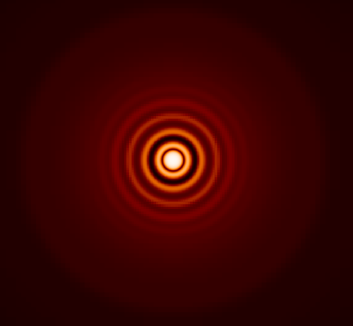

CV
Summary
My research focuses on numerical solutions to Einstein’s theory of general relativity, in cosmological and astrophysical contexts.
I am one of the key authors and developers of the publicly available GRChombo Numerical Relativity code www.grchombo.org.
I am a member of the STFC DiRAC Resource Allocation Committee panel for astronomy and cosmology, and have been involved in benchmarking the next generation DiRAC3 resource. DiRAC provides distributed High Performance Computing (HPC) services to the STFC theory community. For more information go to the DiRAC website.
I am an associate member of the LISA consortium, and play an active role in the Waveform and Fundamental Physics working groups. LISA is a future ESA mission for a space based gravitational wave detector. For more information go to the LISA website.
Education and employment history
| Date | Description |
|---|---|
| October 2021 - present | STFC Ernest Rutherford Fellow - Geometry, Analysis and Gravitation group, School of Mathematical Sciences, Queen Mary University of London, UK |
| October 2018 - October 2021 | Postdoctoral Research Assistant in Theoretical Cosmology and Gravitational Physics - Beecroft Institute for Particle Astrophysics and Cosmology, Oxford University, UK |
| October 2018 - October 2019 | College Lecturer in Physics - St Edmund Hall, Oxford University, UK |
| January 2017 - October 2018 | Postdoctoral Research Assistant - Astrophysics Department, Georg-August University, Göttingen, Germany |
| October 2013 - January 2017 | PhD - Dept Theoretical Particle Physics and Cosmology, King’s College London, UK |
| January 2011 - October 2013 (part time) | Bachelor of Science - Physics (BSc (Hons) Open, 1st Class), Open University, UK |
| October 2002 - October 2006 | Master of Engineering - Engineering Science (MEng, 1st Class), Oxford University, UK |
During the period between my Masters degree and PhD I worked in finance:
- Ernst & Young LLP London UK - Chartered Accountant (CA), Tax Assistant (2006-2009)
- Ingenious Media Ltd London UK - Technical Manager (2009-2012)
Awards and grants
- Springer Thesis Prize my thesis was selected for publication as one of the "best of the best"
- Claude Curling Prize best teaching assistant in physics, King’s College London
- Edgell Sheppee Prize for excellent performance in Finals, Engineering dept, Oxford
- College Scholar for distinction in Prelims, St Edmund Hall, Oxford
- Fozmula Bursary Engineering dept, Oxford
- Award of Merit (Inst. Structural Engineers) Engineering dept, Oxford
Teaching
University of Oxford 2018 - 2021
- General Relativity - third year tutorials at University College
- Numerical Relativity - lecture for graduate students
- Mathematical methods for engineering students first year tutorials at St Edmund Hall
Göttingen University 2017-2018
- General Relativity - lectures on Manifolds to Masters students, problem classes
- Numerical Relativity - two lecture course to Masters students
- Visualisation of astrophysical simulations - Masters practical lab
King’s College London 2013-2016
- Statistical Mechanics - 3rd year undergraduate problem classes
- Group Theory, Nuclear Physics - 2nd year undergraduate problem classes
- Mathematical Methods - 1st year undergraduate tutorials
Seminars and conferences
- I have been invited to give Colloquia at AEI Hanover, ICG Portsmouth .
- I have been invited to give Seminars at AEI Potsdam, Birmingham, Bologna, Cambridge, Cardiff, CENTRA Lisbon, Columbia NY, ICTP Trieste, King's College London, Lancaster, LUTH Paris, Oxford, Nottingham, Perimeter Institute .
- I have participated in Workshops in Forefronts in Cosmology and Numerical General Relativity (Salzburg), Numerical Relativity Beyond General Relativity (Benasque), Numerical Relativity (Jena), LISA Waveform Working Group Meeting (AEI Potsdam), Open Questions in Particle Physics (Goettingen).
- I was one of the organisers of the Collabor8 conference for young researchers at Nottingham (2017) and Lancaster (2018), see www.collabor8research.com.
- I participated in the Advanced Training Programme for Extreme Scale Computing at Argonne Labs (USA), July 2015